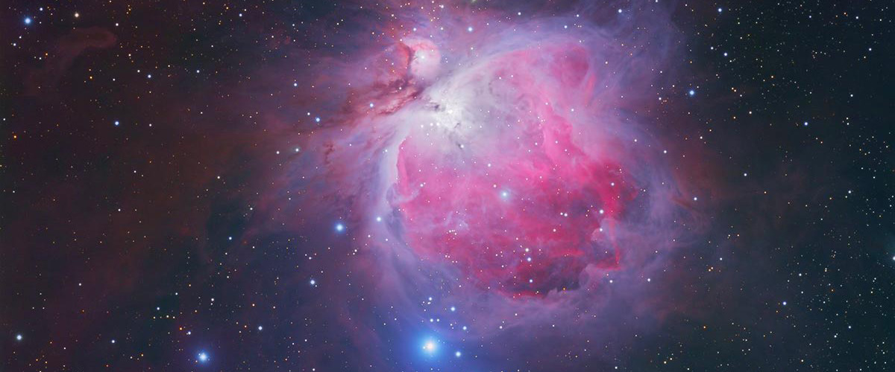

Les nébuleuses fascinantes
Les nébuleuses sont des nuages de gaz et de poussières où naissent de nouvelles étoiles. Voici quelques-unes des plus célèbres :
- 1. Les différents types de nébuleuses et leur aspect au télescope
a) Les nébuleuses diffuses (émission et réflexion)
Nébuleuses en émission : le gaz est ionisé par des étoiles jeunes et chaudes, et émet sa propre lumière.
Couleur dominante : rouge (hydrogène Hα), mais à l’oculaire elles apparaissent souvent grisâtres.
Exemple : la nébuleuse d’Orion (M42).
Nébuleuses en réflexion : la lumière des étoiles est simplement diffusée par la poussière.
Apparence plus faible, souvent légèrement bleutée en photographie.
Exemple : les Pléiades (M45), visibles surtout comme un voile diffus autour des étoiles.
b) Les nébuleuses planétaires
Elles proviennent de l’expulsion des couches externes d’étoiles semblables au Soleil en fin de vie.
Taille apparente souvent petite mais contraste élevé
Aspect : disque flou, anneau ou coquille
Très bien adaptées à l’observation au télescope
Exemples :
M57 (la Lyre) : anneau bien visible
M27 (l’Haltère) : forme bilobée remarquable
c) Les nébuleuses sombres
Nuages de poussière dense qui absorbent la lumière des étoiles situées derrière elles.
Invisibles en tant que telles
Détectées par contraste sur un fond riche en étoiles
Exemple : la nébuleuse de la Tête de Cheval, extrêmement difficile visuellement
d) Les restes de supernova
Vestiges d’étoiles massives ayant explosé.
Structures filamentaires complexes
Très faibles en luminosité surfacique
Exemple : la nébuleuse du Voile dans le Cygne
- 2. Conditions d’observation : un facteur déterminant
a) Pollution lumineuse
Les nébuleuses sont très sensibles à la pollution lumineuse.
Les sites sombres sont essentiels
Sous un ciel urbain, seules quelques nébuleuses brillantes restent visibles
La Voie lactée visible à l’œil nu est un excellent indicateur
b) Transparence du ciel
Contrairement aux planètes, les nébuleuses nécessitent :
Un ciel limpide
Peu d’humidité
Peu de brume ou de cirrus
La transparence est souvent plus importante que la turbulence.
- 3. Quel télescope pour observer les nébuleuses ?
a) Le diamètre
Le diamètre est crucial :
Plus le diamètre est grand, plus la nébuleuse est lumineuse
Les structures faibles deviennent perceptibles
Un Dobson de 200 à 300 mm est idéal pour le ciel profond visuel
b) Le rapport focal
Les instruments « rapides » (f/4 à f/6) sont avantageux
Ils offrent un champ large et lumineux
Très utiles pour les grandes nébuleuses diffuses
c) Lunettes astronomiques
Images contrastées et esthétiques
Champ large
Limitées en diamètre mais excellentes sous ciel sombre
- 4. Grossissement : trouver le bon équilibre
Contrairement aux planètes :
Les nébuleuses aiment les faibles à moyens grossissements
Typiquement : 30× à 100×
Faible grossissement = plus de luminosité surfacique
Grossissement plus élevé utile pour les nébuleuses planétaires
- 5. Les filtres : outils indispensables
a) Filtres interférentiels
UHC : le plus polyvalent, excellent pour M42, M8, M17
OIII : spectaculaire sur les nébuleuses planétaires et le Voile
Hβ : très spécifique, utile pour la Tête de Cheval
Ces filtres bloquent la pollution lumineuse et renforcent les émissions gazeuses.
- 6. Ce que l’on voit réellement à l’oculaire
À l’œil, les nébuleuses apparaissent :
En nuances de gris
Sans couleurs vives (vision nocturne dominée par les bâtonnets)
Avec des formes subtiles, progressives
Les photographies ne reflètent pas l’expérience visuelle réelle.
- 7. Techniques d’observation avancées
a) Vision décalée
Regarder légèrement à côté de l’objet :
Augmente la sensibilité
Révèle des détails invisibles en vision directe
b) Observation prolongée
Les détails apparaissent progressivement
Le cerveau apprend à reconnaître les structures
Observer 20 à 40 minutes par objet est courant
c) Comparaison avec cartes et atlas
Identifier les extensions
Comprendre la structure réelle
Suivre l’évolution de la perception
- 8. Objets emblématiques à observer
M42 – Nébuleuse d’Orion : spectaculaire même avec de petits instruments
M8 – Lagune : grande et contrastée
M17 – Oméga : forme caractéristique
M27 – Haltère : brillante et structurée
Nébuleuse du Voile : magnifique sous ciel sombre avec filtre OIII
- 9. L’expérience humaine de l’observation
Observer une nébuleuse, c’est observer le temps cosmique :
La naissance d’étoiles
La mort d’astres anciens
Des structures immenses façonnées sur des millions d’années
À l’oculaire, ces nuages diffus et silencieux donnent une impression de profondeur et de fragilité, rappelant que notre ciel est un milieu vivant et en constante évolution.

Une nébuleuse très connue et colorée
Retour au blog